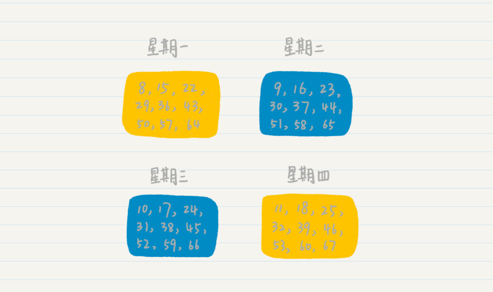
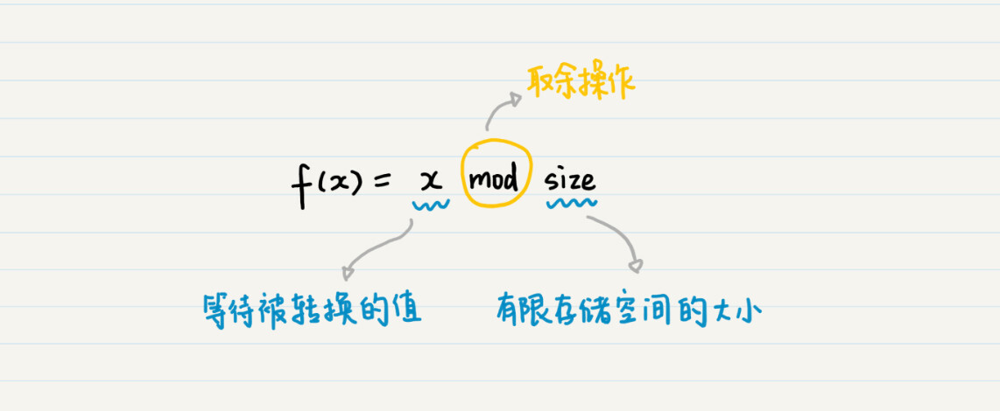
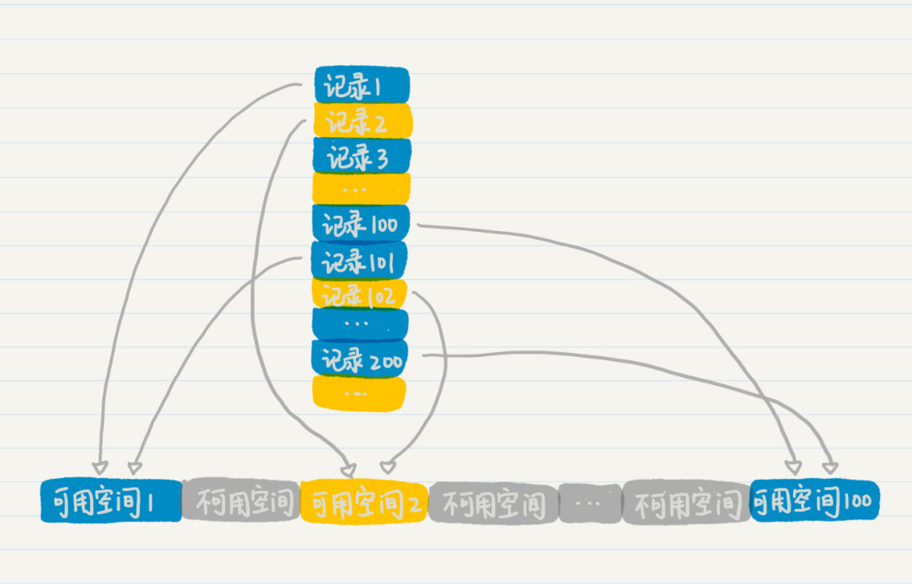

- 01 二进制：不了解计算机的源头，你学什么编程.md
- 02 余数：原来取余操作本身就是个哈希函数.md
- 03 迭代法：不用编程语言的自带函数，你会如何计算平方根？.md
- 04 数学归纳法：如何用数学归纳提升代码的运行效率？.md
- 05 递归（上）：泛化数学归纳，如何将复杂问题简单化？.md
- 06 递归（下）：分而治之，从归并排序到MapReduce.md
- 07 排列：如何让计算机学会“田忌赛马”？.md
- 08 组合：如何让计算机安排世界杯的赛程？.md
- 09 动态规划（上）：如何实现基于编辑距离的查询推荐？.md
- 10 动态规划（下）：如何求得状态转移方程并进行编程实现？.md
- 11 树的深度优先搜索（上）：如何才能高效率地查字典？.md
- 12 树的深度优先搜索（下）：如何才能高效率地查字典？.md
- 13 树的广度优先搜索（上）：人际关系的六度理论是真的吗？.md
- 14 树的广度优先搜索（下）：为什么双向广度优先搜索的效率更高？.md
- 15 从树到图：如何让计算机学会看地图？.md
- 16 时间和空间复杂度（上）：优化性能是否只是“纸上谈兵”？.md
- 17 时间和空间复杂度（下）：如何使用六个法则进行复杂度分析？.md
- 18 总结课：数据结构、编程语句和基础算法体现了哪些数学思想？.md
- 19 概率和统计：编程为什么需要概率和统计？.md
- 20 概率基础（上）：一篇文章帮你理解随机变量、概率分布和期望值.md
- 21 概率基础（下）：联合概率、条件概率和贝叶斯法则，这些概率公式究竟能做什么？.md
- 22 朴素贝叶斯：如何让计算机学会自动分类？.md
- 23 文本分类：如何区分特定类型的新闻？.md
- 24 语言模型：如何使用链式法则和马尔科夫假设简化概率模型？.md
- 25 马尔科夫模型：从PageRank到语音识别，背后是什么模型在支撑？.md
- 26 信息熵：如何通过几个问题，测出你对应的武侠人物？.md
- 27 决策树：信息增益、增益比率和基尼指数的运用.md
- 28 熵、信息增益和卡方：如何寻找关键特征？.md
- 29 归一化和标准化：各种特征如何综合才是最合理的？.md
- 30 统计意义（上）：如何通过显著性检验，判断你的A_B测试结果是不是巧合？.md
- 31 统计意义（下）：如何通过显著性检验，判断你的A_B测试结果是不是巧合？.md
- 32 概率统计篇答疑和总结：为什么会有欠拟合和过拟合？.md
- 33 线性代数：线性代数到底都讲了些什么？.md
- 34 向量空间模型：如何让计算机理解现实事物之间的关系？.md
- 35 文本检索：如何让计算机处理自然语言？.md
- 36 文本聚类：如何过滤冗余的新闻？.md
- 37 矩阵（上）：如何使用矩阵操作进行PageRank计算？.md
- 38 矩阵（下）：如何使用矩阵操作进行协同过滤推荐？.md
- 39 线性回归（上）：如何使用高斯消元求解线性方程组？.md
- 40 线性回归（中）：如何使用最小二乘法进行直线拟合？.md
- 41 线性回归（下）：如何使用最小二乘法进行效果验证？.md
- 42 PCA主成分分析（上）：如何利用协方差矩阵来降维？.md
- 43 PCA主成分分析（下）：为什么要计算协方差矩阵的特征值和特征向量？.md
- 44 奇异值分解：如何挖掘潜在的语义关系？.md
- 45 线性代数篇答疑和总结：矩阵乘法的几何意义是什么？.md
- 46 缓存系统：如何通过哈希表和队列实现高效访问？.md
- 47 搜索引擎（上）：如何通过倒排索引和向量空间模型，打造一个简单的搜索引擎？.md
- 48 搜索引擎（下）：如何通过查询的分类，让电商平台的搜索结果更相关？.md
- 49 推荐系统（上）：如何实现基于相似度的协同过滤？.md
- 50 推荐系统（下）：如何通过SVD分析用户和物品的矩阵？.md
- 51 综合应用篇答疑和总结：如何进行个性化用户画像的设计？.md
- 导读：程序员应该怎么学数学？.md
- 开篇词 作为程序员，为什么你应该学好数学？.md
- 数学专栏课外加餐（一） 我们为什么需要反码和补码？.md
- 数学专栏课外加餐（三）：程序员需要读哪些数学书？.md
- 数学专栏课外加餐（二） 位操作的三个应用实例.md
- 结束语 从数学到编程，本身就是一个很长的链条.md
02 余数：原来取余操作本身就是个哈希函数
你好，我是黄申。今天我们来聊聊“余数”。
提起余数，我想你肯定不陌生，因为我们生活中就有很多很多与余数相关的例子。
比如说，今天是星期三，你想知道50天之后是星期几，那你可以这样算，拿50除以7（因为一个星期有7天），然后余1，最后在今天的基础上加一天，这样你就能知道50天之后是星期四了。
再比如，我们做Web编程的时候，经常要用到分页的概念。如果你要展示1123条数据，每页10条，那该怎么计算总共的页数呢？我想你肯定是拿1123除以10，最后得到商是112，余数是3，所以你的总页数就是112+1=113，而最后的余数就是多出来，凑不够一页的数据。
看完这几个例子，不知道你有没有发现，余数总是在一个固定的范围内。
比如你拿任何一个整数除以7，那得到的余数肯定是在0～6之间的某一个数。所以当我们知道1900年的1月1日是星期一，那便可以知道这一天之后的第1万天、10万天是星期几，是不是很神奇？
你知道，整数是没有边界的，它可能是正无穷，也可能是负无穷。但是余数却可以通过某一种关系，让整数处于一个确定的边界内。我想这也是人类发明星期或者礼拜的初衷吧，任你时光变迁，我都是以7天为一个周期，“周”而复始地过着确定的生活。因为从星期的角度看，不管你是哪一天，都会落到星期一到星期日的某一天里。
我们再拿上面星期的例子来看。假如今天是星期一，从今天开始的100天里，都有多少个星期呢？你拿100除以7，得到商14余2，也就是说这100天里有14周多2天。换个角度看，我们可以说，这100天里，你的第1天、第8天、第15天等等，在余数的世界里都被认为是同一天，因为它们的余数都是1，都是星期一，你要上班的日子。同理，第2天、第9天、第16天余数都是2，它们都是星期二。
这些数的余数都是一样的，所以被归类到了一起，有意思吧？是的，我们的前人早已注意到了这一规律或者特点，所以他们把这一结论称为同余定理。简单来说，就是两个整数a和b，如果它们除以正整数m得到的余数相等，我们就可以说a和b对于模m同余。
也就是说，上面我们说的100天里，所有星期一的这些天都是同余的，所有星期二的这些天就是同余的，同理，星期三、星期四等等这些天也都是同余的。
还有，我们经常提到的奇数和偶数，其实也是同余定理的一个应用。当然，这个应用里，它的模就是2了，2除以2余0，所以它是偶数；3除以2余1，所以它是奇数。2和4除以2的余数都是0，所以它们都是一类，都是偶数。3和5除以2的余数都是1，所以它们都是一类，都是奇数。
你肯定会说，同余定理就这么简单吗，这个定理到底有什么实际的用途啊？其实，我上面已经告诉你答案了，你不妨先自己思考下，同余定理的意义到底是什么。
简单来说，同余定理其实就是用来分类的。你知道，我们有无穷多个整数，那怎么能够全面、多维度地管理这些整数？同余定理就提供了一个思路。
因为不管你的模是几，最终得到的余数肯定都在一个范围内。比如我们上面除以7，就得到了星期几；我们除以2，就得到了奇偶数。所以按照这种方式，我们就可以把无穷多个整数分成有限多个类。
这一点，在我们的计算机中，可是有大用途。
哈希（Hash）你应该不陌生，在每个编程语言中，都会有对应的哈希函数。哈希有的时候也会被翻译为散列，简单来说，它就是将任意长度的输入，通过哈希算法，压缩为某一固定长度的输出。这话听着是不是有点耳熟？我们上面的求余过程不就是在做这事儿吗？
举个例子，假如你想要快速读写100万条数据记录，要达到高速的存取，最理想的情况当然是开辟一个连续的空间存放这些数据，这样就可以减少寻址的时间。但是由于条件的限制，我们并没有能够容纳100万条记录的连续地址空间，这个时候该怎么办呢？
我们可以考察一下，看看系统是否可以提供若干个较小的连续空间，而每个空间又能存放一定数量的记录。比如我们找到了100个较小的连续空间，也就是说，这些空间彼此之间是被分隔开来的，但是内部是连续的，并足以容纳1万条记录连续存放，那么我们就可以使用余数和同余定理来设计一个散列函数，并实现哈希表的结构。
那这个函数应该怎么设计呢？你可以先停下来思考思考，提醒你下，你可以再想想星期几的那个例子，因为这里面用的就是余数的思想。

下面是我想到的一种方法：

在这个公式中，x表示等待被转换的数值，而size表示有限存储空间的大小，mod表示取余操作。通过余数，你就能将任何数值，转换为有限范围内的一个数值，然后根据这个新的数值，来确定将数据存放在何处。
具体来说，我们可以通过记录标号模100的余数，指定某条记录存放在哪个空间。这个时候，我们的公式就变成了这样：
假设有两条记录，它们的记录标号分别是1和101。我们把这些模100之后余数都是1的，存放到第1个可用空间里。以此类推，将余数为2的2、102、202等，存放到第2个可用空间，将100、200、300等存放到第100个可用空间里。
这样，我们就可以根据求余的快速数字变化，对数据进行分组，并把它们存放到不同的地址空间里。而求余操作本身非常简单，因此几乎不会增加寻址时间。

除此之外，为了增加数据散列的随机程度，我们还可以在公式中加入一个较大的随机数MAX，于是，上面的公式就可以写成这样：
我们假设随机数MAX是590199，那么我们针对标号为1的记录进行重新计算，最后的计算结果就是0，而针对标号101的记录，如果随机数MAX取627901，对应的结果应该是2。这样先前被分配到空间1的两条记录，在新的计算公式作用下，就会被分配到不同的可用空间中。
你可以尝试记录2和102，或者记录100和200，最后应该也是同样的情况。你会发现，使用了MAX这个随机数之后，被分配到同一个空间中的记录就更加“随机”，更适合需要将数据重新洗牌的应用场景，比如加密算法、MapReduce中的数据分发、记录的高速查询和定位等等。
让我以加密算法为例，在这里面引入MAX随机数就可以增强加密算法的保密程度，是不是很厉害？举个例子，比如说我们要加密一组三位数，那我们设定一个这样的加密规则：
- 先对每个三位数的个、十和百位数，都加上一个较大的随机数。
2 然后将每位上的数都除以7，用所得的余数代替原有的个、十、百位数；
- 最后将第一位和第三位交换。
这就是一个基本的加密变换过程。
假如说，我们要加密数字625，根据刚才的规则，我们来试试。假设随机数我选择590127。那百、十和个位分别加上这个随机数，就变成了590133，590129，590132。然后，三位分别除以7求余后得到5，1，4。最终，我们可以得到加密后的数字就是415。因为加密的人知道加密的规则、求余所用的除数7、除法的商、以及所引入的随机数590127，所以当拿到415的时候，加密者就可以算出原始的数据是625。是不是很有意思？
小结
到这里，余数的所有知识点我们都讲完了。我想在此之前，你肯定是知道余数，也明白怎么求余。但对于余数的应用不知道你之前是否有思考过呢？我们经常说，数学是计算机的基础，在余数这个小知识点里，我们就能找到很多的应用场景，比如我前面介绍的散列函数、加密算法，当然，也还有我们没有介绍到的，比如循环冗余校验等等。
余数只是数学知识中的沧海一粟。你在中学或者大学的时候，肯定接触过很多的数学知识和定理，编程的时候也会经常和数字、公式以及数据打交道，但是真正学懂数学的人却没几个。希望我们可以从余数这个小概念开始，让你认识到数学思想其实非常实用，用好这些知识，对你的编程，甚至生活都有意想不到的作用。
思考题
你可以想想，在生活和编程中，还有哪些地方用到了余数的思想呢？
欢迎在留言区交作业，并写下你今天的学习笔记。你可以点击“请朋友读”，把今天的内容分享给你的好友，和他一起精进。
© 2019 - 2023 Liangliang Lee. Powered by gin and hexo-theme-book.